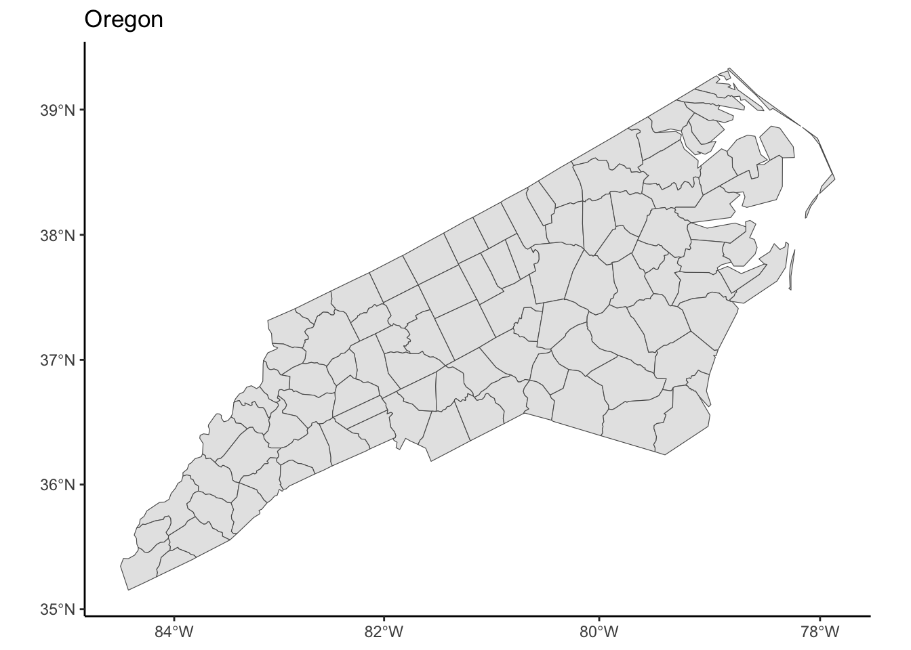
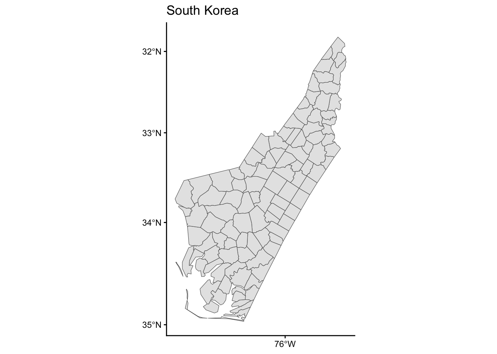
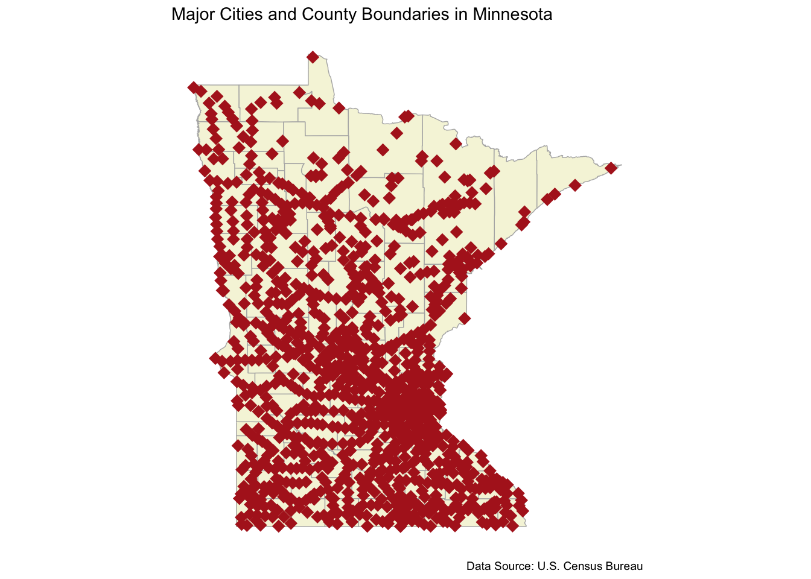
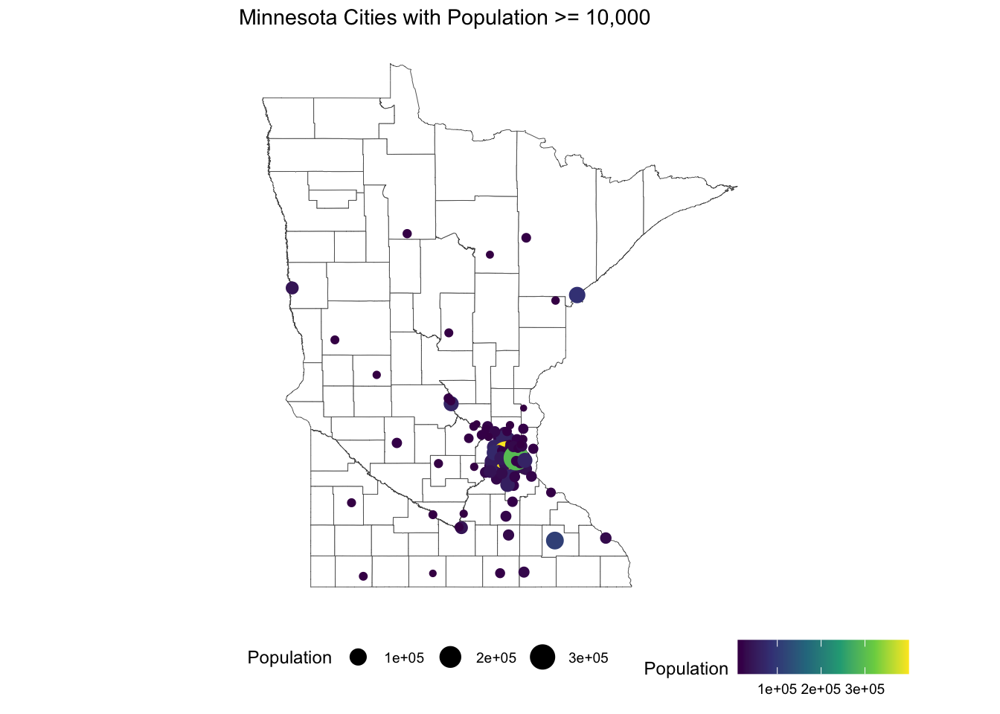
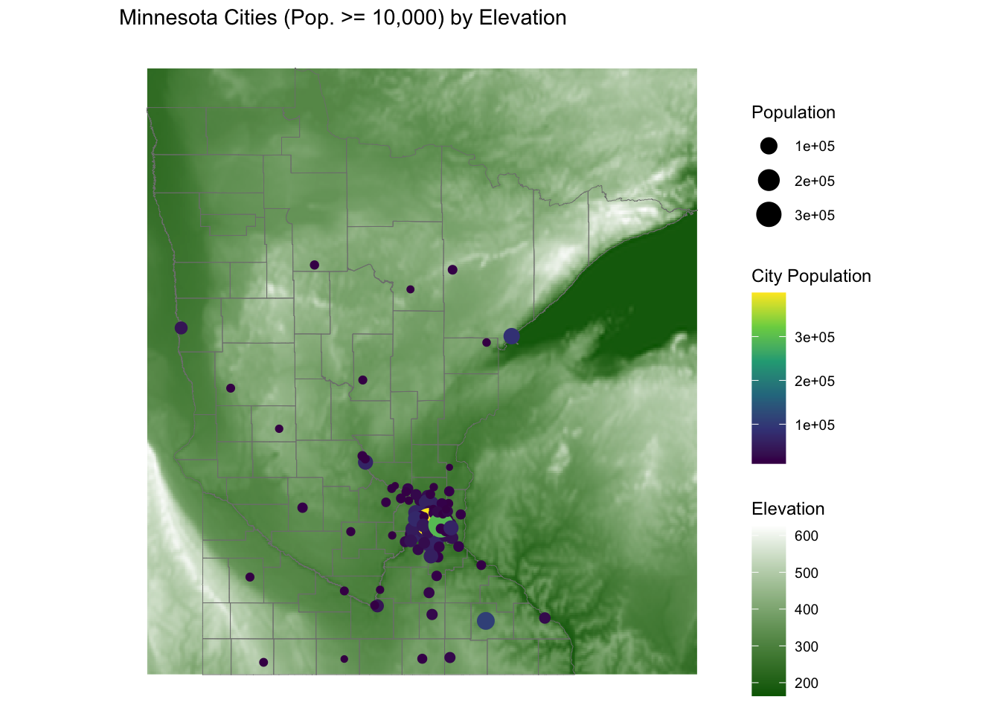
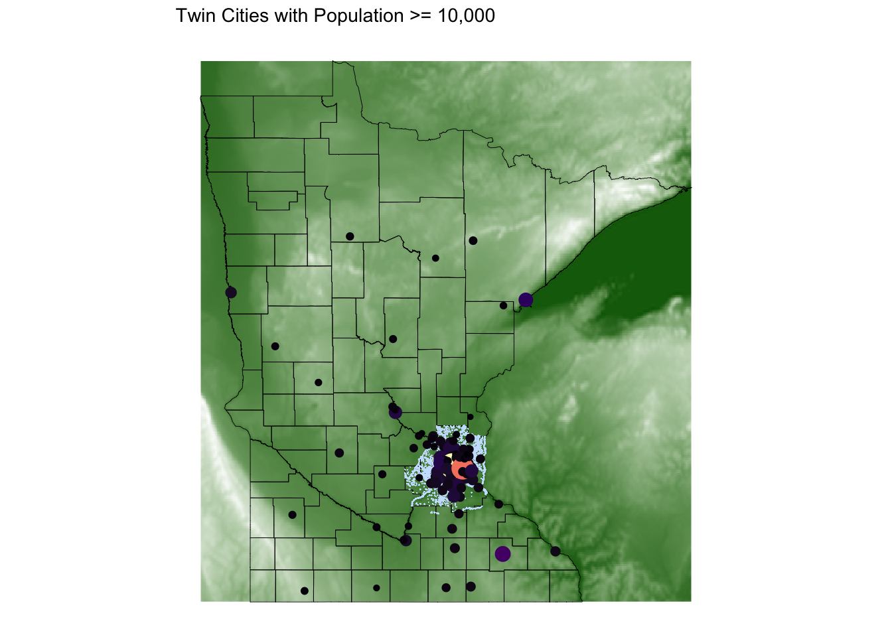

For this activity, create the following directory structure in your portfolio repository under src/ica folder:
portfolio└─ src └─ ica └─ 04_adv_maps ├─ code │ └─ 04-adv-maps-1-notes.qmd ├─ data │ └─ ... ← saving data here during this activity └─ figures └─ ... ← saving created maps here during this activity
First load required packages.
Code
#Install these packages first# install.packages(c("sf","elevatr","terra","stars","tidycensus"))# install.packages('devtools')#devtools::install_github("ropensci/USAboundaries")#install.packages("USAboundariesData", repos = "https://ropensci.r-universe.dev", type = "source")library(tidyverse)library(sf) # tools for working with spatial vector data (GIS functionality, mapping)library(elevatr) # access to raster elevation mapslibrary(terra)library(stars)library(tidycensus) # spatial data for the US with census informationlibrary(USAboundaries) # access to boundaries for US states, counties, zip codes, and congressional districts
Navigate to the following URLs to download the spatial data files we’ll be using in this activity. Put these files in the data folder of your 04_adv_maps folder.
File name: shp_water_lakes_rivers.zip (Unzip this after downloading.)
Read in Files
Read in the MN cities and MN water shapefiles by entering the correct relative paths in st_read(). Tab completion will be very helpful here: type part of a directory or file name and hit tab to autocomplete or bring up a dropdown of options.
Code
# The sf package comes with a North Carolina shapefile:nc <-st_read(system.file("shape/nc.shp", package ="sf"))
Reading layer `nc' from data source
`/Library/Frameworks/R.framework/Versions/4.5-arm64/Resources/library/sf/shape/nc.shp'
using driver `ESRI Shapefile'
Simple feature collection with 100 features and 14 fields
Geometry type: MULTIPOLYGON
Dimension: XY
Bounding box: xmin: -84.32385 ymin: 33.88199 xmax: -75.45698 ymax: 36.58965
Geodetic CRS: NAD27
Code
# Read in shapefiles just downloadedmn_cities <-st_read("~/Documents/GitHub/portfolio-my-name-arch/src/ica/metadata/city_and_township_population_centers.shp")
Reading layer `city_and_township_population_centers' from data source
`/Users/Dooley/Documents/GitHub/portfolio-my-name-arch/src/ica/metadata/city_and_township_population_centers.shp'
using driver `ESRI Shapefile'
Simple feature collection with 1081 features and 8 fields
Geometry type: POINT
Dimension: XY
Bounding box: xmin: 190832.6 ymin: 4816672 xmax: 747463.4 ymax: 5468045
Projected CRS: NAD83 / UTM zone 15N
Reading layer `LakesAndRivers' from data source
`/Users/Dooley/Documents/GitHub/portfolio-my-name-arch/src/ica/metadata/LakesAndRivers.shp'
using driver `ESRI Shapefile'
Simple feature collection with 2313 features and 8 fields
Geometry type: MULTIPOLYGON
Dimension: XY
Bounding box: xmin: 419538.6 ymin: 4922700 xmax: 522665 ymax: 5029945
Projected CRS: NAD83 / UTM zone 15N
The sf package reads in spatial data in data.frame-like format. Using the class() function we can check the class (type) of object that we just read in. Note the presence of the “sf” and “data.frame” classes:
Code
class(nc)
[1] "sf" "data.frame"
Code
class(mn_cities)
[1] "sf" "data.frame"
Code
class(mn_water)
[1] "sf" "data.frame"
When we read in spatial objects, it is useful to check what CRS underlies the data. We can do that with st_crs() from the sf package:
Code
st_crs(nc)
Coordinate Reference System:
User input: NAD27
wkt:
GEOGCRS["NAD27",
DATUM["North American Datum 1927",
ELLIPSOID["Clarke 1866",6378206.4,294.978698213898,
LENGTHUNIT["metre",1]]],
PRIMEM["Greenwich",0,
ANGLEUNIT["degree",0.0174532925199433]],
CS[ellipsoidal,2],
AXIS["latitude",north,
ORDER[1],
ANGLEUNIT["degree",0.0174532925199433]],
AXIS["longitude",east,
ORDER[2],
ANGLEUNIT["degree",0.0174532925199433]],
ID["EPSG",4267]]
We can treat sf objects similarly to ordinary datasets when using ggplot2 to make spatial visualizations:
Let’s explore how changing the CRS changes the map. The st_transform() function in sf re-expresses a spatial object using a user-supplied CRS. The crs argument takes a string descriptor of the CRS. We can find these descriptors via https://epsg.io. In the example below, I searched for “South Carolina”.
The goal is to use https://epsg.io to find two CRSs that result in a North Carolina map that is noticeably different from the original in the NAD27 CRS.
Take a look at the function below that re-maps a spatial object using a new CRS.
Read through the function to get a sense for how this code works.
spatial_obj and new_crs are called arguments (function inputs).
Add one more argument called title to this function. Use this input to set the plot title.
Use your function to make two new maps using your chosen CRSs.
Code
# Load necessary libraries firsttransform_and_plot <-function(spatial_obj, new_crs, plot_title) { spatial_obj |>st_transform(crs = new_crs) |>ggplot() +geom_sf() +# The main geometry layerggtitle(plot_title) +# Use the new argument for the titletheme_classic()}transform_and_plot(nc,"EPSG:2991","Oregon")

Code
transform_and_plot(nc,"EPSG:5969","South Korea")

Verify your understanding: If you had point location data that was not in the NAD27 CRS, what would you expect about the accuracy of how they would be overlaid on the original North Carolina map?
MN Map with Multiple Layers
Goal: create a map of MN with different layers of information (city point locations, county polygon boundaries, rivers as lines and polygons, and a raster elevation map).
Get County Boundaries
We’ve already read in city location and water information from external shapefiles. We can access county boundaries with the us_counties() function in the USAboundaries package.
Code
# Load country boundaries data as sf objectmn_counties <- USAboundaries::us_counties(resolution ="high", states ="Minnesota")# Take care of duplicate column names (there are two identical "state_name" columns)names_counties <-names(mn_counties)names(mn_counties)[names_counties =="state_name"] <-c("state_name1", "state_name2")
Unifying CRSs Across Different Spatial Datasets
We first need to ensure that the CRS is the same for all spatial datasets.
Check the CRS for the mn_cities, mn_water, and mn_counties datasets.
If the datasets don’t all have the same CRS, use st_transform() to update the datasets to have the same CRS as mn_cities. You can use crs = st_crs(mn_cities) within st_transform().
Code
st_crs(mn_cities)
Coordinate Reference System:
User input: NAD83 / UTM zone 15N
wkt:
PROJCRS["NAD83 / UTM zone 15N",
BASEGEOGCRS["NAD83",
DATUM["North American Datum 1983",
ELLIPSOID["GRS 1980",6378137,298.257222101,
LENGTHUNIT["metre",1]]],
PRIMEM["Greenwich",0,
ANGLEUNIT["degree",0.0174532925199433]],
ID["EPSG",4269]],
CONVERSION["UTM zone 15N",
METHOD["Transverse Mercator",
ID["EPSG",9807]],
PARAMETER["Latitude of natural origin",0,
ANGLEUNIT["Degree",0.0174532925199433],
ID["EPSG",8801]],
PARAMETER["Longitude of natural origin",-93,
ANGLEUNIT["Degree",0.0174532925199433],
ID["EPSG",8802]],
PARAMETER["Scale factor at natural origin",0.9996,
SCALEUNIT["unity",1],
ID["EPSG",8805]],
PARAMETER["False easting",500000,
LENGTHUNIT["metre",1],
ID["EPSG",8806]],
PARAMETER["False northing",0,
LENGTHUNIT["metre",1],
ID["EPSG",8807]]],
CS[Cartesian,2],
AXIS["(E)",east,
ORDER[1],
LENGTHUNIT["metre",1]],
AXIS["(N)",north,
ORDER[2],
LENGTHUNIT["metre",1]],
ID["EPSG",26915]]
Code
st_crs(mn_counties)
Coordinate Reference System:
User input: EPSG:4326
wkt:
GEOGCRS["WGS 84",
DATUM["World Geodetic System 1984",
ELLIPSOID["WGS 84",6378137,298.257223563,
LENGTHUNIT["metre",1]]],
PRIMEM["Greenwich",0,
ANGLEUNIT["degree",0.0174532925199433]],
CS[ellipsoidal,2],
AXIS["geodetic latitude (Lat)",north,
ORDER[1],
ANGLEUNIT["degree",0.0174532925199433]],
AXIS["geodetic longitude (Lon)",east,
ORDER[2],
ANGLEUNIT["degree",0.0174532925199433]],
USAGE[
SCOPE["Horizontal component of 3D system."],
AREA["World."],
BBOX[-90,-180,90,180]],
ID["EPSG",4326]]
Counties + Cities
Create a map where city locations are overlaid on a map of county boundaries.
You will need to call geom_sf() twice.
Make the map background white.
Install the ggthemes package, and add the following layer to use a clean map theme: + ggthemes::theme_map()
Code
library(ggthemes)ggplot() +# First geom_sf() call: draw the county boundariesgeom_sf(data = mn_counties, fill ="#F5F5DC", color ="gray70", linewidth =0.25) +# Second geom_sf() call: draw the city points on topgeom_sf(data = mn_cities, color ="#B22222", size =3.5, shape =18) +# Apply the clean map themetheme_map() +# Add titleslabs(title ="Major Cities and County Boundaries in Minnesota",caption ="Data Source: U.S. Census Bureau")

Customize Colors
We can use traditional ggplot2 aesthetics (e.g., fill, color) to display location specific attributes. Below we only plot large cities, and we color and size cities according to their population.
Code
ggplot() +geom_sf(data = mn_counties, fill ="white") +geom_sf(data = mn_cities |>filter(Population >=10000), mapping =aes(color = Population, size = Population)) +# cities layerscale_color_viridis_c() +# continuous (gradient) color scalelabs(title ="Minnesota Cities with Population >= 10,000") + ggthemes::theme_map() +theme(legend.position ="bottom") # move legend

Look up the scale_color_viridis_c() documentation via the ggplot2 reference.
Read the function description at the top. What is the advantage of using this function for making color palettes? It improves accessibility for those who are colorblind
Look through the examples section. What is the difference between the _d(), _c(), and _b() variants of this function? I takes types of scale whether it’s continuous, discrete, and binned
Adding Elevation Raster Data
Where are large cities located? Is there some relationship to local geography/terrain?
To investigate these questions, we can obtain elevation data to include on the map using the elevatr package. We encounter two new functions here—we can look up their documentation to make sense of the code by entering the following in the Console:
elevation <- elevatr::get_elev_raster(mn_counties, z =5, clip ="bbox")raster::crs(elevation) <- sf::st_crs(mn_counties)# Convert to data frame for plottingelev_df <- elevation |> terra::as.data.frame(xy =TRUE)colnames(elev_df) <-c("x", "y", "elevation")
Build on our existing map by adding a raster layer for elevation as the background.
Look up the documentation for geom_raster() to plot the elevation data from elev_df. This will be the first layer of the plot.
Look at the documentation for scale_fill_gradient() to add the following elevation color scale: "darkgreen" represents the lowest elevations, and "white" represents the highest elevations.
Add in the layers from the map above to show the largest cities and the county outlines. To remove a background color, use fill = NA.
Code
ggplot() +# Layer 1: Elevation raster backgroundgeom_raster(data = elev_df, aes(x = x, y = y, fill = elevation)) +# Layer 2: County boundaries (transparent fill)geom_sf(data = mn_counties, fill =NA, color ="gray50") +# Layer 3: City points, filtered for population >= 10,000geom_sf(data = mn_cities |>filter(Population >=10000), mapping =aes(color = Population, size = Population)) +# Custom color scalesscale_fill_gradient(low ="darkgreen", high ="white", name ="Elevation") +scale_color_viridis_c(name ="City Population") +# Apply a clean map theme ggthemes::theme_map() +# Add a title and adjust legendlabs(title ="Minnesota Cities (Pop. >= 10,000) by Elevation") +theme(legend.position ="right")

Zoom in to Twin Cities and Add Water
The bulk of the interesting information in this map is in the Twin Cities area. Let’s zoom in to this area.
We can use the st_bbox() function to get the bounding box for a spatial object—we do this after filtering to the 7 counties in the Twin Cities.
We then use st_crop() to trim a spatial object to a given bounding box.
Code
# Define the file path for the output imageoutput_path <-"../../figures/tc_map_zoom.png"# Start the PNG graphics devicepng(output_path, width =800, height =800)# --- Code for creating the plot (from the prompt) ---ggplot() +geom_raster(data = elev_df, aes(x = x, y = y, fill = elevation)) +geom_sf(data = mn_counties, fill =NA, color ="black") +# county boundary layergeom_sf(data = mn_water, fill ="lightsteelblue1", color ="lightsteelblue1") +# river/lake layergeom_sf(data = mn_cities |>filter(Population >=10000), mapping =aes(color = Population, size = Population)) +# cities layerscale_color_viridis_c(option ="magma") +# continuous (gradient) color scalescale_fill_gradient(low ="darkgreen", high ="white") +# continuous (gradient) fill scalelabs(title ="Twin Cities with Population >= 10,000") + ggthemes::theme_map() +theme(legend.position ="none") # remove legend# Close the graphics device to save the filedev.off()
quartz_off_screen
2
In the plot below, we add a layer for water information and a coord_sf() layer to restrict the x and y-axis limits to the Twin Cities bounding box. (Without this layer, the map would zoom back out to show all counties and bodies of water).
Code
ggplot() +geom_raster(data = elev_df, aes(x = x, y = y, fill = elevation)) +geom_sf(data = mn_counties, fill =NA, color ="black") +# county boundary layergeom_sf(data = mn_water, fill ="lightsteelblue1", color ="lightsteelblue1") +# NEW: river/lake layergeom_sf(data = mn_cities |>filter(Population >=10000), mapping =aes(color = Population, size = Population)) +# cities layerscale_color_viridis_c(option ="magma") +# continuous (gradient) color scalescale_fill_gradient(low ="darkgreen", high ="white") +# continuous (gradient) fill scalelabs(title ="Twin Cities with Population >= 10,000") + ggthemes::theme_map() +theme(legend.position ="none") # remove legend

Let’s add to the above code chunk to save the map above to an image file called tc_map_zoom.png in the figures folder. The code example below shows a general template for saving a plot to file. Choose a reasonable width and height. (There are also jpeg() and pdf() functions for writing images.)
Going Beyond - Twin Cities Map with leaflet
Below we show how to make the MN counties map in the leaflet package.
Check the ICA Instructions for how to (a) push your code to GitHub and (b) update your portfolio website
Source Code
---title: "4 Advanced Spatial Viz P1"---```{r doc_setup, echo=FALSE, message=FALSE}#| echo: false#| message: falselibrary(tidyverse)knitr::opts_chunk$set(fig.align = "center", warning = FALSE, message = FALSE)```## 🧩 Learning GoalsBy the end of this lesson, you should be able to:- Understand the basics of a CRS (coordinate reference system)- Understand and recognize different spatial file types and data types in R- Implement some of the basic plotting with the `sf` package- Understand foundational ideas in working with spatial data (aggregating spatial point data to a spatial region, joining spatial data sets)## Additional Resources- Spatial Data Science with Applications in R book: [web](https://r-spatial.org/book/)- Spatial Data Science with R and `terra` Resources: [web]( https://rspatial.org/)- Leaflet in R Package: [web](https://rstudio.github.io/leaflet/)- CRAN task view on spatial analysis: [web](https://cran.r-project.org/web/views/Spatial.html)## SetupFor this activity, create the following directory structure in your portfolio repository under `src/ica` folder:```markdownportfolio└─ src └─ ica └─ 04_adv_maps ├─ code │ └─ 04-adv-maps-1-notes.qmd ├─ data │ └─ ... ← saving data here during this activity └─ figures └─ ... ← saving created maps here during this activity```First load required packages.```{r setup}#Install these packages first# install.packages(c("sf","elevatr","terra","stars","tidycensus"))# install.packages('devtools') #devtools::install_github("ropensci/USAboundaries") #install.packages("USAboundariesData", repos = "https://ropensci.r-universe.dev", type = "source")library(tidyverse)library(sf) # tools for working with spatial vector data (GIS functionality, mapping)library(elevatr) # access to raster elevation mapslibrary(terra)library(stars)library(tidycensus) # spatial data for the US with census informationlibrary(USAboundaries) # access to boundaries for US states, counties, zip codes, and congressional districts ```## Spatial Data in RSee [Spatial Data Appendix](https://hash-mac.github.io/stat212site-f25/notes/spatial-data.html) for basics of CRS and spatial data types.### Download Shapefiles1. Navigate to the following URLs to download the spatial data files we'll be using in this activity. Put these files in the `data` folder of your `04_adv_maps` folder.- MN cities: <https://gisdata.mn.gov/dataset/loc-pop-centers> - File type: shapefile (`.shp`) - File name: `shp_loc_pop_centers.zip` (Unzip this after downloading.)- MN water: <https://gisdata.mn.gov/dataset/us-mn-state-metc-water-lakes-rivers> - File type: shapefile (`.shp`) - File name: `shp_water_lakes_rivers.zip` (Unzip this after downloading.)### Read in Files2. Read in the MN cities and MN water shapefiles by entering the correct relative paths in `st_read()`. **Tab completion will be very helpful here: type part of a directory or file name and hit tab to autocomplete or bring up a dropdown of options.**```{r reading}# The sf package comes with a North Carolina shapefile:nc <- st_read(system.file("shape/nc.shp", package = "sf"))# Read in shapefiles just downloadedmn_cities <- st_read("~/Documents/GitHub/portfolio-my-name-arch/src/ica/metadata/city_and_township_population_centers.shp")library(sf)mn_water <- st_read("~/Documents/GitHub/portfolio-my-name-arch/src/ica/metadata/LakesAndRivers.shp")```The `sf` package reads in spatial data in `data.frame`-like format. Using the `class()` function we can check the **class** (type) of object that we just read in. Note the presence of the "sf" and "data.frame" classes:```{r check_class_sf}class(nc)class(mn_cities)class(mn_water)```When we read in spatial objects, it is useful to check what CRS underlies the data. We can do that with `st_crs()` from the `sf` package:```{r check_nc_crs}st_crs(nc)```We can treat `sf` objects similarly to ordinary datasets when using `ggplot2` to make spatial visualizations:```{r nc_first_map}ggplot(nc) + geom_sf() + theme_classic() + labs(title = "NAD27")```### Change CRS3. Let's explore how changing the CRS changes the map. The `st_transform()` function in `sf` re-expresses a spatial object using a user-supplied CRS. The `crs` argument takes a string descriptor of the CRS. We can find these descriptors via <https://epsg.io>. In the example below, I searched for "South Carolina".```{r transform_nc}nc_transformed <- nc |> st_transform(crs = "EPSG:2991")st_crs(nc_transformed)ggplot(nc_transformed) + geom_sf() + theme_classic()```The goal is to use <https://epsg.io> to **find two CRSs** that result in a North Carolina map that is noticeably different from the original in the NAD27 CRS.Take a look at the **function** below that re-maps a spatial object using a new CRS.- Read through the function to get a sense for how this code works.- `spatial_obj` and `new_crs` are called **arguments** (function **inputs**). - Add one more argument called `title` to this function. Use this input to set the plot title.- Use your function to make two new maps using your chosen CRSs.```{r transform_via_function}# Load necessary libraries firsttransform_and_plot <- function(spatial_obj, new_crs, plot_title) { spatial_obj |> st_transform(crs = new_crs) |> ggplot() + geom_sf() + # The main geometry layer ggtitle(plot_title) + # Use the new argument for the title theme_classic()}transform_and_plot(nc,"EPSG:2991","Oregon")transform_and_plot(nc,"EPSG:5969","South Korea")```**Verify your understanding:** If you had point location data that was not in the NAD27 CRS, what would you expect about the accuracy of how they would be overlaid on the original North Carolina map?## MN Map with Multiple Layers**Goal:** create a map of MN with different layers of information (city point locations, county polygon boundaries, rivers as lines and polygons, and a raster elevation map).### Get County Boundaries4. We've already read in city location and water information from external shapefiles. We can access county boundaries with the `us_counties()` function in the `USAboundaries` package.```{r read_county_data}# Load country boundaries data as sf objectmn_counties <- USAboundaries::us_counties(resolution = "high", states = "Minnesota")# Take care of duplicate column names (there are two identical "state_name" columns)names_counties <- names(mn_counties)names(mn_counties)[names_counties == "state_name"] <- c("state_name1", "state_name2")```### Unifying CRSs Across Different Spatial Datasets5. We first need to ensure that the CRS is the same for all spatial datasets.- Check the CRS for the `mn_cities`, `mn_water`, and `mn_counties` datasets.- If the datasets don't all have the same CRS, use `st_transform()` to update the datasets to have the same CRS as `mn_cities`. You can use `crs = st_crs(mn_cities)` within `st_transform()`.```{r}st_crs(mn_cities)st_crs(mn_counties)```### Counties + Cities6. Create a map where city locations are overlaid on a map of county boundaries.- You will need to call `geom_sf()` twice.- Make the map background white.- Install the `ggthemes` package, and add the following layer to use a clean map theme: `+ ggthemes::theme_map()````{r}library(ggthemes)ggplot() +# First geom_sf() call: draw the county boundariesgeom_sf(data = mn_counties, fill ="#F5F5DC", color ="gray70", linewidth =0.25) +# Second geom_sf() call: draw the city points on topgeom_sf(data = mn_cities, color ="#B22222", size =3.5, shape =18) +# Apply the clean map themetheme_map() +# Add titleslabs(title ="Major Cities and County Boundaries in Minnesota",caption ="Data Source: U.S. Census Bureau")```### Customize Colors7. We can use traditional `ggplot2` aesthetics (e.g., `fill`, `color`) to display location specific attributes. Below we only plot large cities, and we color and size cities according to their population.```{r mn_map_add_color}ggplot() + geom_sf(data = mn_counties, fill = "white") + geom_sf(data = mn_cities |> filter(Population >= 10000), mapping = aes(color = Population, size = Population)) + # cities layer scale_color_viridis_c() + # continuous (gradient) color scale labs(title = "Minnesota Cities with Population >= 10,000") + ggthemes::theme_map() + theme(legend.position = "bottom") # move legend```Look up the `scale_color_viridis_c()` documentation via the [ggplot2 reference](https://ggplot2.tidyverse.org/reference/scale_viridis.html).- Read the function description at the top. What is the advantage of using this function for making color palettes?It improves accessibility for those who are colorblind- Look through the examples section. What is the difference between the `_d()`, `_c()`, and `_b()` variants of this function?I takes types of scale whether it's continuous, discrete, and binned### Adding Elevation Raster DataWhere are large cities located? Is there some relationship to local geography/terrain? 8. To investigate these questions, we can obtain elevation data to include on the map using the `elevatr` package. We encounter two new functions here---we can look up their documentation to make sense of the code by entering the following in the Console:- `?elevatr::get_elev_raster`- `?terra::as.data.frame````{r get_elevation_data_zoom_out}elevation <- elevatr::get_elev_raster(mn_counties, z = 5, clip = "bbox")raster::crs(elevation) <- sf::st_crs(mn_counties)# Convert to data frame for plottingelev_df <- elevation |> terra::as.data.frame(xy = TRUE)colnames(elev_df) <- c("x", "y", "elevation")```Build on our existing map by adding a raster layer for elevation as the background.- Look up the documentation for `geom_raster()` to plot the elevation data from `elev_df`. This will be the first layer of the plot.- Look at the documentation for `scale_fill_gradient()` to add the following elevation color scale: `"darkgreen"` represents the lowest elevations, and `"white"` represents the highest elevations.- Add in the layers from the map above to show the largest cities and the county outlines. To remove a background color, use `fill = NA`.```{r}ggplot() +# Layer 1: Elevation raster backgroundgeom_raster(data = elev_df, aes(x = x, y = y, fill = elevation)) +# Layer 2: County boundaries (transparent fill)geom_sf(data = mn_counties, fill =NA, color ="gray50") +# Layer 3: City points, filtered for population >= 10,000geom_sf(data = mn_cities |>filter(Population >=10000), mapping =aes(color = Population, size = Population)) +# Custom color scalesscale_fill_gradient(low ="darkgreen", high ="white", name ="Elevation") +scale_color_viridis_c(name ="City Population") +# Apply a clean map theme ggthemes::theme_map() +# Add a title and adjust legendlabs(title ="Minnesota Cities (Pop. >= 10,000) by Elevation") +theme(legend.position ="right")```### Zoom in to Twin Cities and Add Water9. The bulk of the interesting information in this map is in the Twin Cities area. Let's zoom in to this area.- We can use the `st_bbox()` function to get the **bounding box** for a spatial object---we do this after filtering to the 7 counties in the Twin Cities.- We then use `st_crop()` to trim a spatial object to a given bounding box.```{r get_elevation_data_zoom_in}# Define the file path for the output imageoutput_path <- "../../figures/tc_map_zoom.png"# Start the PNG graphics devicepng(output_path, width = 800, height = 800)# --- Code for creating the plot (from the prompt) ---ggplot() + geom_raster(data = elev_df, aes(x = x, y = y, fill = elevation)) + geom_sf(data = mn_counties, fill = NA, color = "black") + # county boundary layer geom_sf(data = mn_water, fill = "lightsteelblue1", color = "lightsteelblue1") + # river/lake layer geom_sf(data = mn_cities |> filter(Population >= 10000), mapping = aes(color = Population, size = Population)) + # cities layer scale_color_viridis_c(option = "magma") + # continuous (gradient) color scale scale_fill_gradient(low = "darkgreen", high = "white") + # continuous (gradient) fill scale labs(title = "Twin Cities with Population >= 10,000") + ggthemes::theme_map() + theme(legend.position = "none") # remove legend# Close the graphics device to save the filedev.off()```In the plot below, we add a layer for water information and a `coord_sf()` layer to restrict the x and y-axis limits to the Twin Cities bounding box. (Without this layer, the map would zoom back out to show all counties and bodies of water).```{r elevation_map_zoom_in}ggplot() + geom_raster(data = elev_df, aes(x = x, y = y, fill = elevation)) + geom_sf(data = mn_counties, fill = NA, color = "black") + # county boundary layer geom_sf(data = mn_water, fill = "lightsteelblue1", color = "lightsteelblue1") + # NEW: river/lake layer geom_sf(data = mn_cities |> filter(Population >= 10000), mapping = aes(color = Population, size = Population)) + # cities layer scale_color_viridis_c(option = "magma") + # continuous (gradient) color scale scale_fill_gradient(low = "darkgreen", high = "white") + # continuous (gradient) fill scale labs(title = "Twin Cities with Population >= 10,000") + ggthemes::theme_map() + theme(legend.position = "none") # remove legend```Let's add to the above code chunk to save the map above to an image file called `tc_map_zoom.png` in the `figures` folder. The code example below shows a general template for saving a plot to file. Choose a reasonable width and height. (There are also `jpeg()` and `pdf()` functions for writing images.)## Going Beyond - Twin Cities Map with `leaflet`Below we show how to make the MN counties map in the `leaflet` package.```{r leaflet}library(leaflet)mn_counties_leaf <- mn_counties |> st_transform(4326) # Leaflet expects this CRS for vectorsmn_cities_leaf <- mn_cities |> st_transform(4326)cities_per_county <- st_join(mn_cities_leaf, mn_counties_leaf) |> st_drop_geometry() |> # removes geometry - makes the following calculation more efficient count(name) mn_counties_leaf |> filter(name %in% c("Anoka", "Hennepin", "Ramsey", "Dakota", "Carver", "Washington", "Scott")) |> left_join(cities_per_county) |> leaflet() |> addProviderTiles("CartoDB.Positron") |> addPolygons( color = "#444444", weight = 1, smoothFactor = 0.5, opacity = 1.0, fillOpacity = 0.5, fillColor = ~colorQuantile("YlOrRd", n)(n), highlightOptions = highlightOptions(color = "white", weight = 2, bringToFront = TRUE)) |> addCircles(data = mn_cities_leaf |> filter(County %in% paste(c("Anoka", "Hennepin", "Ramsey", "Dakota", "Carver", "Washington", "Scott"), "County")), color = "#444444")```## Done!- Check the ICA Instructions for how to (a) push your code to GitHub and (b) update your portfolio website